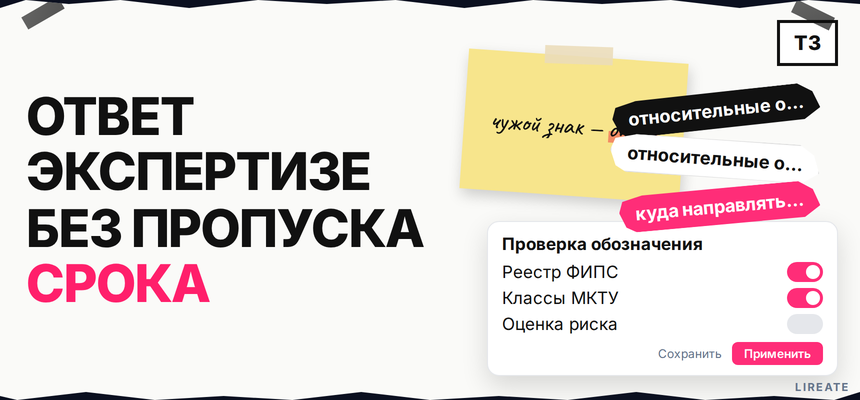
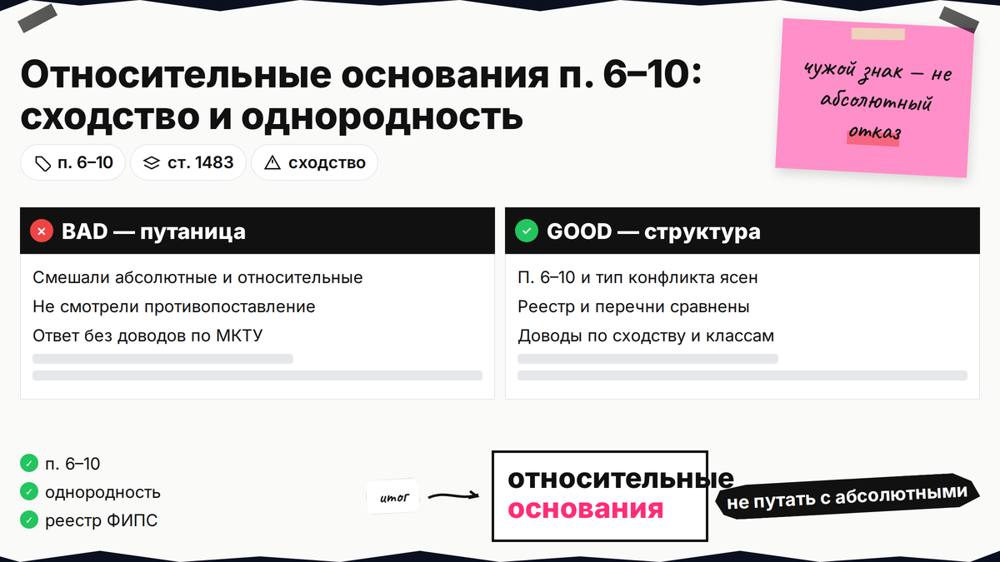
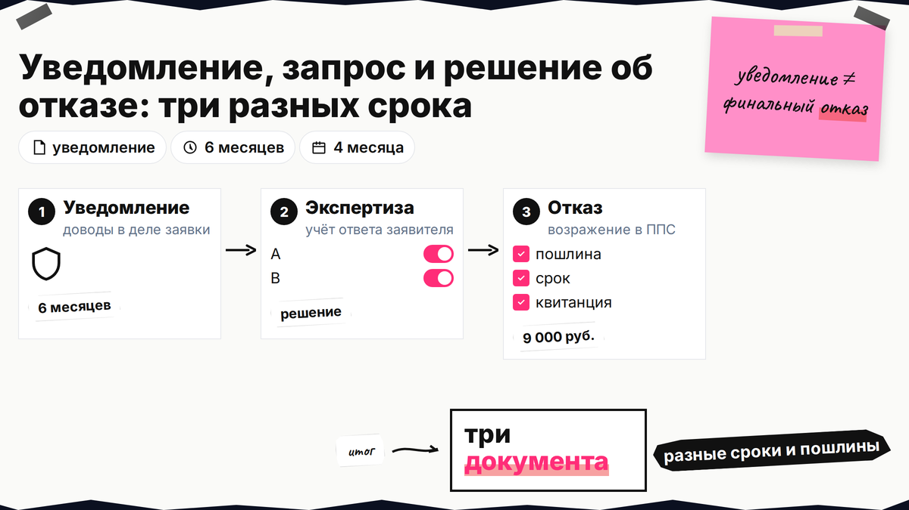
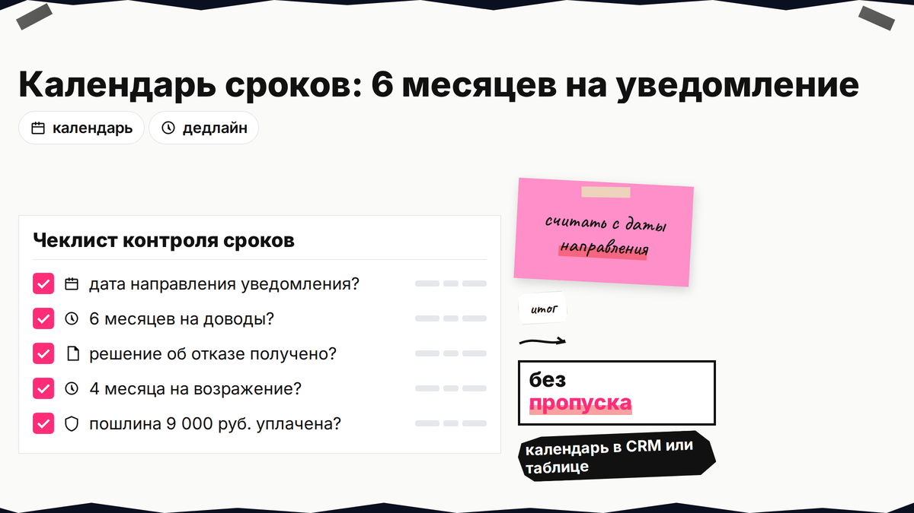

Письмо из Роспатента с противопоставлением чужого товарного знака путает даже опытных предпринимателей: это ещё не финальный отказ, сроки разные, а ответ без структуры часто не учитывают. Относительные основания по п. 6–10 ст. 1483 ГК РФ означают конфликт с чужими правами, а не с "запретными словами" в самом обозначении. Ниже - как отличить уведомление от решения, уложиться в 6 или 4 месяца и собрать письмо-согласие, сужение перечня МКТУ или доводы о несходстве.

TL;DR / Быстрый инсайт: Относительные основания для отказа в регистрации товарного знака - это п. 6–10 ст. 1483 ГК РФ: сходство с чужим знаком, НМПТ, фирменным именем, произведением и иными объектами. На уведомление экспертизы (ст. 1499) у вас 6 месяцев с даты направления письма, чтобы подать мотивированные доводы; на окончательный отказ - возражение в Роспатент по ст. 1500 за 4 месяца и пошлина 9 000 руб. (п. 2.28.2). Тактика: разобрать противопоставления в Поисковой платформе, затем согласие правообладателя, ограничение перечня или аргументы о несходстве и неоднородности.
Если вы уже делали проверку знака перед подачей, часть номеров в уведомлении будет знакома. Главное на экспертизе - не перепутать уведомление, решение и возражение и не пропустить срок с даты направления письма.

Абсолютные основания (п. 1–5 ст. 1483) касаются самого обозначения: государственная символика, общепринятые термины, обман потребителя. Относительные - конфликт с правами других лиц: чужой товарный знак, наименование места происхождения, фирменное имя, портрет, промышленный образец и т.д. Экспертиза сравнивает ваш знак с тем, что уже охраняется, и смотрит на однородность товаров или услуг в перечне МКТУ.
Делайте: выпишите из письма ФИПС точный пункт ст. 1483 и номера противопоставлений. Не делайте: отвечать общими фразами "знаки разные" без привязки к классам и формулировкам перечня.
| Пункт ст. 1483 | Суть конфликта | Типичный инструмент ответа |
|---|---|---|
| П. 6 | Сходство до смешения с более ранним ТЗ, заявкой или общеизвестным знаком | Письмо-согласие, доводы о несходстве, сужение перечня, неоднородность |
| П. 7 | Конфликт с НМПТ или гарантией происхождения | Исключение позиций перечня, доказательства иного использования |
| П. 8 | Сходство с фирменным наименованием, коммерческим обозначением, селекционным достижением | Даты возникновения прав, неоднородность, иные элементы знака |
| П. 9 | Известное произведение, имя, портрет, образец, знак соответствия без согласия | Согласие правообладателя, доказательства отличий |
| П. 10 | Включение охраняемых средств индивидуализации других лиц | Согласие по правилам п. 6 и п. 9, переработка обозначения |

На заявке бывают запрос по формальностям, уведомление о проверке по существу (мотив по п. 6–10) и решение об отказе или регистрации. По ст. 1499 на уведомление можно подать доводы до финала. Отказ оспаривают возражением по ст. 1500 в ППС Роспатента.
Делайте: в шапке каждого PDF найдите слова "уведомление", "решение" или "запрос" и номер заявки. Не делайте: называть ответ на уведомление "возражением в ППС" - это разные этапы и разные пошлины.
| Документ | Срок для заявителя | Куда направлять | Пошлина (ориентир) |
|---|---|---|---|
| Уведомление (ст. 1499 п. 3) | 6 месяцев с даты направления уведомления | Ответ в деле заявки (кабинет ФИПС, ЕПГУ, почта) | На этапе доводов по уведомлению - без отдельной пошлины 2.28.2 |
| Решение об отказе | 4 месяца с даты направления решения (или с даты выдачи копий противопоставлений, если запросили вовремя) | Возражение в Роспатент (ППС) | 9 000 руб. по п. 2.28.2 (актуальным пошлинам Роспатента; канон — таблица на rospatent.gov.ru) |
Три документа - три срока:
Уведомление (6 мес., доводы в деле заявки) → экспертиза учитывает ответ → решение о регистрации или отказе → при отказе возражение в ППС (4 мес., 9 000 руб.)

Срок на ответ исчисляется с даты направления уведомления (шапка письма), а не с дня прочтения. Доводы экспертиза обычно рассматривает в пределах регламента ФИПС (ориентир - до двух месяцев с поступления).
Делайте: ставить напоминание за 30 и за 7 дней до дедлайна. Не делайте: ждать последнего дня - сбой кабинета или почты не продлевает срок.
Из уведомления выпишите номер чужого знака или заявки, классы МКТУ и цитату экспертизы. Откройте Поисковую платформу (бесплатно, круглосуточно) и при необходимости открытые реестры ФИПС (поиск по номеру на fips.ru/registers-web; символы *, ?, >, < в запросе не используют). Сравните изображения и словесную часть, пересечение классов и формулировок товаров: конфликт чаще всего по однородным позициям, а не по "похожему настроению" бренда.
Для п. 6 добавьте таблицу: фонетика, смысл, графика. Алгоритм поиска - в чек-листе проверки знака. Делайте: приложить выписки с номерами знаков. Не делайте: отвечать без анализа однородности товаров.
По п. 6 ст. 1483 регистрация при сходстве возможна с письменного согласия правообладателя противопоставленного знака, если нет риска введения потребителя в заблуждение. Согласие неотзывно; для коллективных знаков этот путь не применяют. Эксперт всё равно может отказать, если видит риск смешения на рынке - согласие не равно автоматической регистрации.
Чек-лист полей письма-согласия (подлинник, произвольная форма, см. методические рекомендации):
Делайте: согласовать текст до подписания и приложить подлинник к ответу на уведомление. Не делайте: отправлять скан без последующей передачи оригинала, если экспертиза его запросит.
При конфликте по части позиций - ограничение перечня (п. 2 ст. 1497): убрать однородные товары, из-за которых видят смешение. На возражении (ст. 1500 п. 2) это возможно, если препятствие одно. Параллельно докажите несходство знаков или неоднородность товаров (каналы, аудитория, цена).
Делайте: в ответе разбить аргументацию по каждому мотиву из уведомления отдельным подзаголовком в тексте письма. Не делайте: сужать перечень так, что охрана перестанет покрывать ваш реальный ассортимент.
Если решение об отказе уже вынесено, административный путь - возражение в Роспатент (ППС), а не повторный "ответ на уведомление". В комплект входят доводы, просительная часть, доказательства и копия уплаты 9 000 руб. Подача - через ЕПГУ с УКЭП, сервисы ФИПС или почта. Оспаривание чужой уже зарегистрированный знак третьим лицом - другая процедура (ст. 1512); её в этой статье не разбираем.
Делайте: хранить УИН пошлины с текстом возражения. Не делайте: считать 9 000 руб. "за каждый класс" - для п. 2.28.2 сумма фиксированная. При нескольких противопоставлениях помогает сопровождение регистрации товарного знака на Лирейт.
Материал проверен: редакция Лирейт, практика ответов на уведомления и возражений по товарным знакам.
Достоверность данных: п. 6–10 и ст. 1499–1500 ГК РФ, пошлины 2.28.1–2.28.3 и Поисковая платформа сверены с КонсультантПлюс, таблицей Роспатента и публикациями ФИПС на 20.10.2026. Показы Яндекс Вордстат в среде подготовки материала не запрашивались.
Абсолютные касаются самого знака (символика, обман). Относительные - конфликта с чужими правами по п. 6–10. Сверьте мотивировку в уведомлении с таблицей в начале статьи.
В дело заявки через кабинет ФИПС, ЕПГУ или почту. Это не возражение в ППС и не пошлина 9 000 руб.
Шесть месяцев с даты направления уведомления (ст. 1499 п. 3). Считайте от шапки письма и подайте ответ заранее.
Да по п. 6 ст. 1483, если нет введения в заблуждение. Нужен подлинник с конкретным перечнем; не для коллективных знаков. Эксперт может отказать при риске смешения.
Обычно 4 месяца с направления решения. При запросе копий в первые 2 месяца срок может течь с даты выдачи копий - см. п. 1 ст. 1500 и текст решения.
9 000 руб. по п. 2.28.2 (актуальным пошлинам Роспатента; канон — таблица на rospatent.gov.ru), фиксированная сумма, не за каждый класс МКТУ.
Часто да: уберите однородные позиции в ответе на уведомление или в возражении (ст. 1500 п. 2), если после сужения знак регистрируем. Проверьте, что перечень всё ещё покрывает ваш ассортимент.